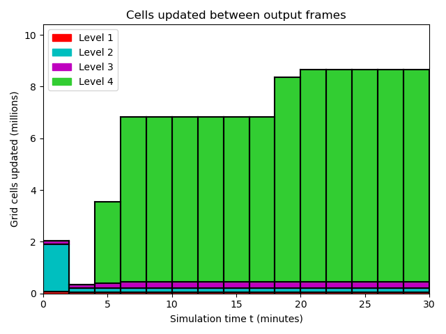
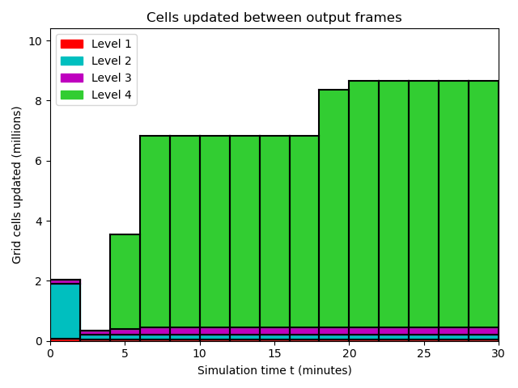
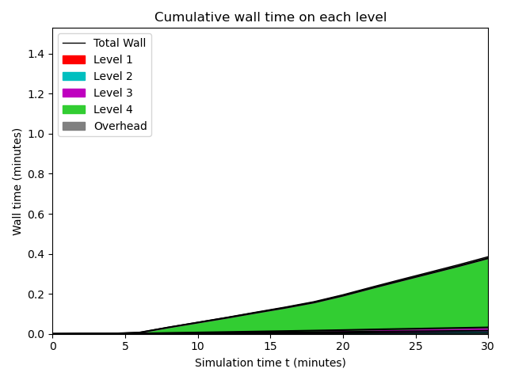
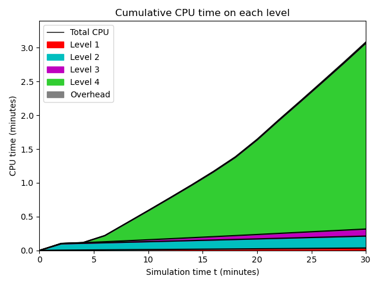
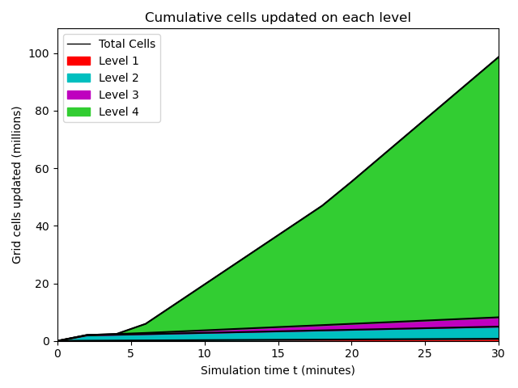
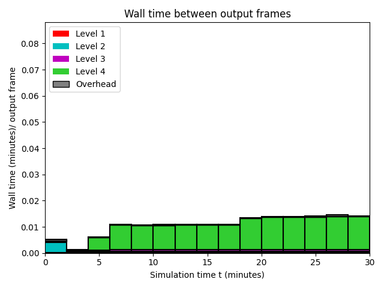
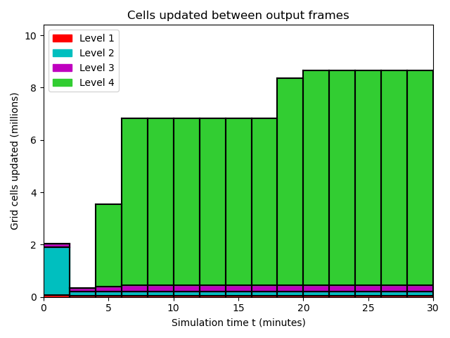
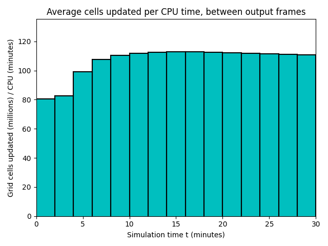

Datetime: 2024-03-15 17:10 From: /Users/rjl/clawpack_src/clawpack_master/geoclaw/examples/tsunami/eta_init_force_dry/_output
============================== Timing Data ==============================
Integration Time (stepgrid + BC + overhead)
Level Wall Time (seconds) CPU Time (seconds) Total Cell Updates
1 0.124 0.484 0.739E+06
2 0.571 2.491 0.422E+07
3 0.602 1.676 0.324E+07
4 8.165 43.422 0.904E+08
total 9.463 48.072 0.986E+08
All levels:
stepgrid 9.199 47.225
BC/ghost cells 0.238 0.815
Regridding 0.114 0.342
Output (valout) 0.071 0.045
Total time: 9.715 48.592
Using 6 thread(s)
Note: The CPU times are summed over all threads.
Total time includes more than the subroutines listed above
Note: timings are also recorded for each output step
in the file timing.csv.
clock_rate = 1000000000 per second, count_max = 9223372036854775807
clock_start = 1710547787270049000, clock_finish = 1710547796985173000
=========================================================================
  


